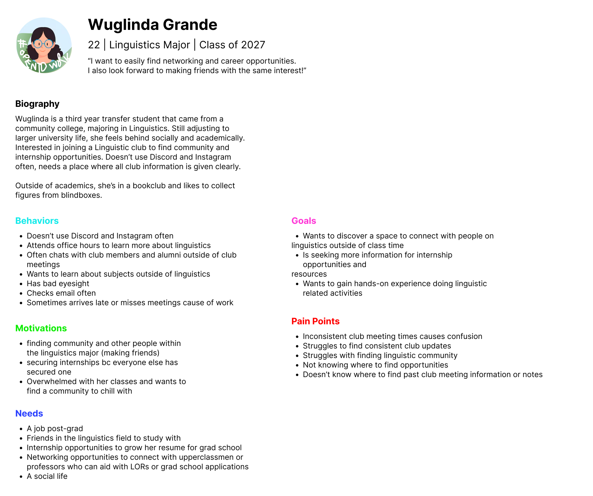
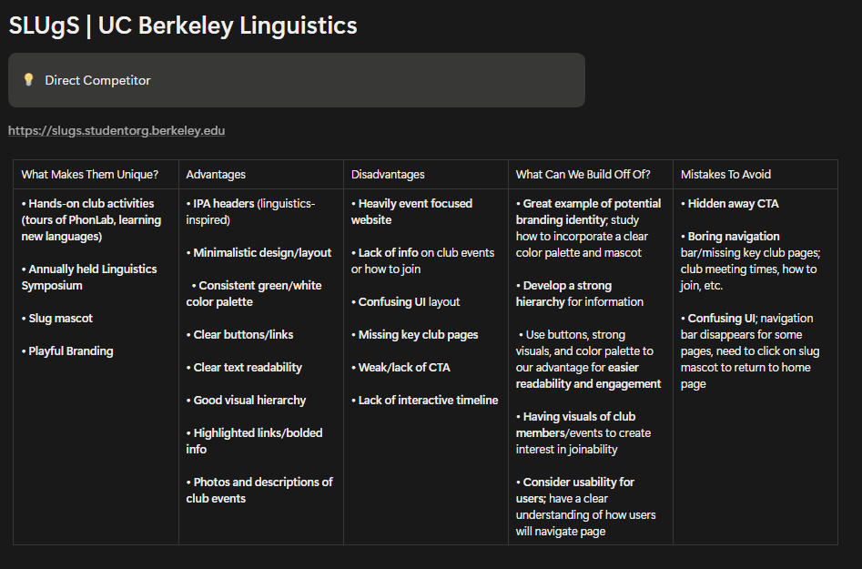
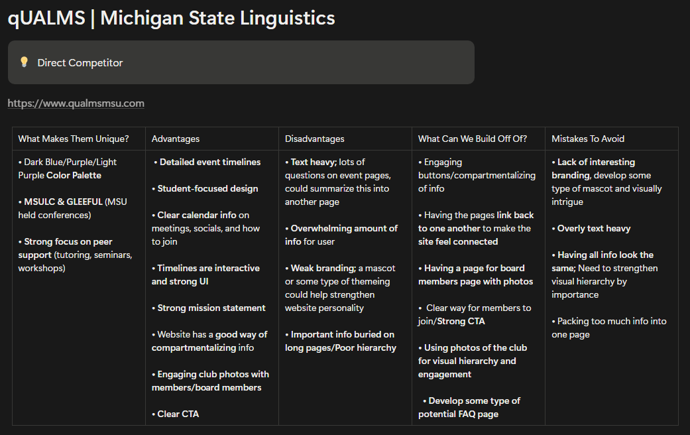
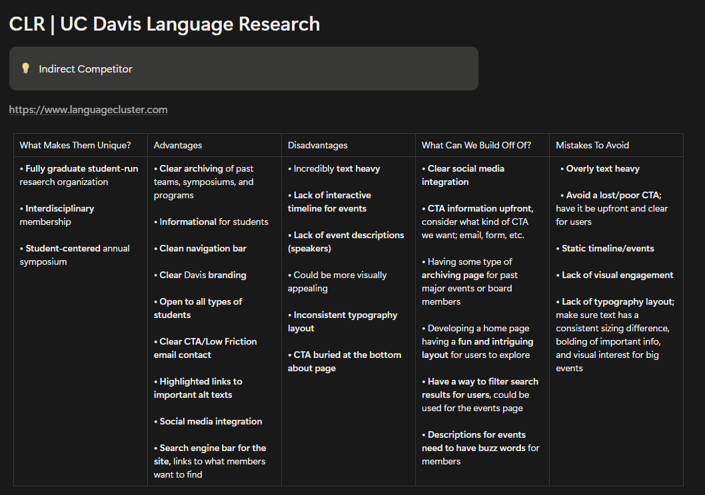
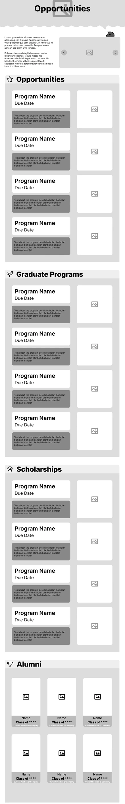
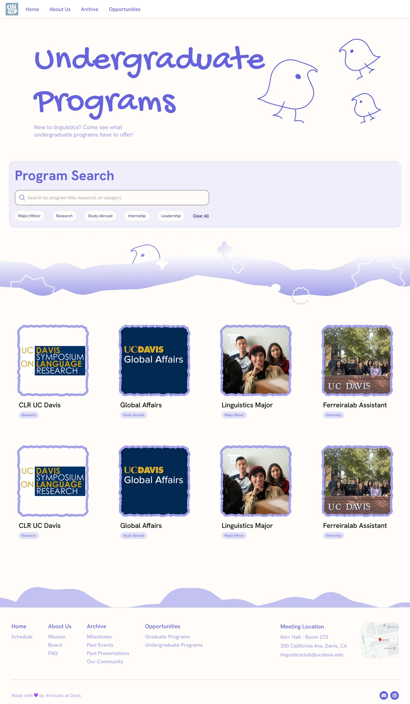

Streamlining access to club and academic information for UC Davis linguistics students.
This project began in a two-quarter #Include design cohort, with the goal of increasing outreach and improving access to club and academic resources for UC Davis linguistics students. Our team set out to design one central website that clearly communicates club information, meeting schedules and pathways within the linguistics major.
I owned the Opportunities section. I translated research and content requirements into a structured, user-centered experience, and through iterative wireframing from low to high fidelity, organized academic resources into a clear format that makes information easy to find.
- Designed the Opportunities pages, from lo-fi sketches to hi-fi prototypes.
- Ran a competitive analysis of 3 linguistics organization sites.
- Helped build the site’s information architecture.
- Ran usability testing at every stage, from lo-fi wireframes to hi-fi prototypes.
- Owned 3 design sprints and delivered 3 key pages.
Students had no single place to find club and academic info
UC Davis Linguistics Club students lacked a centralized and accessible source for club information, meeting schedules and academic resources.
As a newly established club, a weak information structure limited outreach and reduced engagement, making it hard for students to discover opportunities within the linguistics major and community.
150+ linguistics students, from undergrads to grad students
Students struggled to find the basics, from meeting times to ways to get involved
We interviewed club members and board representatives, I ran a competitive analysis of 3 peer linguistics sites, and we sorted every note into themes over three rounds of affinity mapping.

The information was there, but students had to dig to find it
- Text-heavy, unstructured pages
- No system for archiving past events and work
- Hidden or unclear calls to action
- Events and resources were hard to discover
- Weak hierarchy and inconsistent typography
- Static content that gave students little reason to return




From research to a tested prototype in 7 weeks
A 7-week sprint, from user research to hi-fi prototypes. Hatched blocks show the parts I owned.
Usability testing the mid-fi showed where students got lost
Repeating boxes buried the page’s goal, so we cut them back
Usability testing on the mid-fi showed the visual density created more friction than help. Toggle between Before and After to see each problem and how the final design fixed it.

- No clear starting pointStudents landed on a wall of text with no search or filters to guide them.
- Three boxes per program, repeatedA name box, a gray text block and an image box made every listing heavy, and the pattern repeated in every section.
- An alumni section we couldn't fillThe club is too new to have alumni to feature.

- Search comes firstAfter talking with the client, a program search and filters sit right under the title.
- One light card per programEach listing became a photo, a title and a tag in an open grid that eases visual strain.
- Alumni section cutWe removed it as not feasible for a club this new, keeping the page on current opportunities.
Opportunities, organized for quick browsing
Click through the final Opportunities pages
3 key pages delivered for 150+ students across 3 sprints
The project wrapped up at the end of spring quarter 2026.
My first UI/UX project taught me to design for people, not just screens

Good design serves the people you design for, not just the visuals
This was my first time designing with the full UI/UX process, and my first time designing for a real client. It taught me to look past how a page looks and dig deeper into the user-oriented issues underneath, like whether students could actually find what they came for.
I would grow the club's reach with the people who know the major best
I would sit down with the client again to plan further outreach for the site, and talk with more Linguistics professors and TAs to uncover more opportunities and new ways to get linguistics students involved.